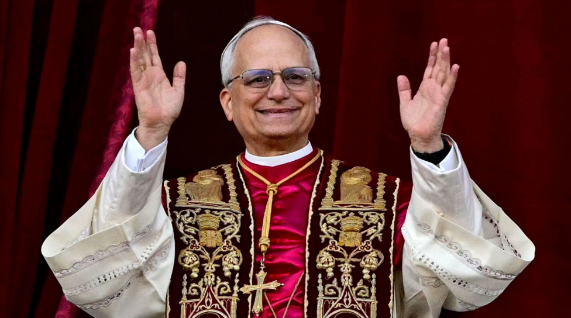

El camino que llevó a León XIV al papado
La elección de un papa es un acontecimiento importante para la Iglesia católica. Robert Francis Prevost llegó a ocupar este cargo después de muchos años de trabajo religioso, primero como sacerdote, luego como obispo y cardenal, hasta ser elegido durante el cónclave de 2025.

Prevost fue ordenado sacerdote en 1982 y perteneció a la Orden de San Agustín. Durante su trayectoria trabajó en diferentes comunidades y asumió distintas responsabilidades religiosas.
En 2014 fue nombrado obispo de Chiclayo, en Perú. Años después, en 2023, el papa Francisco lo nombró prefecto del Dicasterio para los Obispos y lo creó cardenal. Desde ese puesto, participó en tareas relacionadas con la selección de obispos.
Tras la muerte del papa Francisco en abril de 2025, los cardenales electores se reunieron en el Vaticano para elegir a su sucesor. Este proceso recibe el nombre de cónclave y se realiza mediante votaciones secretas.
El 8 de mayo de 2025, Robert Francis Prevost fue elegido papa. Eligió el nombre de León XIV y se convirtió en el primer papa nacido en Estados Unidos. Su experiencia pastoral en Perú también fue una parte destacada de su trayectoria.